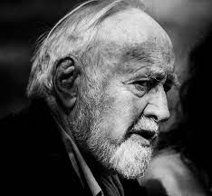

The blog will display thoughts about sustainability from various articles and sources dealing with generating clean energy, ecology, environment and best practices. Posts will be either stating a problem or solutions. Attribution will be cited. Pictures, illustrations, maps and short videos will be included along with a brief explanation.

"Our enormously productive economy demands that we make consumption our way of life, that we convert the buying and use of goods into rituals, that we seek our spiritual satisfaction and our ego satisfaction in consumption."
Victor Lebow
"Let us turn everybody into uninformed consumer making totally irrational choices buying things that they don't want...That is the chore of the marketing economy."
Noam Chomsky; Requiem for the American dream

"Though the problems of the world are increasingly complex, the solutions remain embarrassingly simple."
Bill Mollison; The father of permaculture